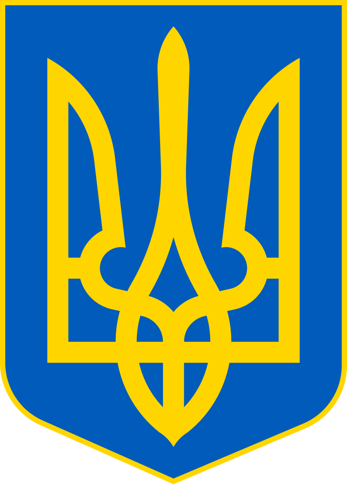
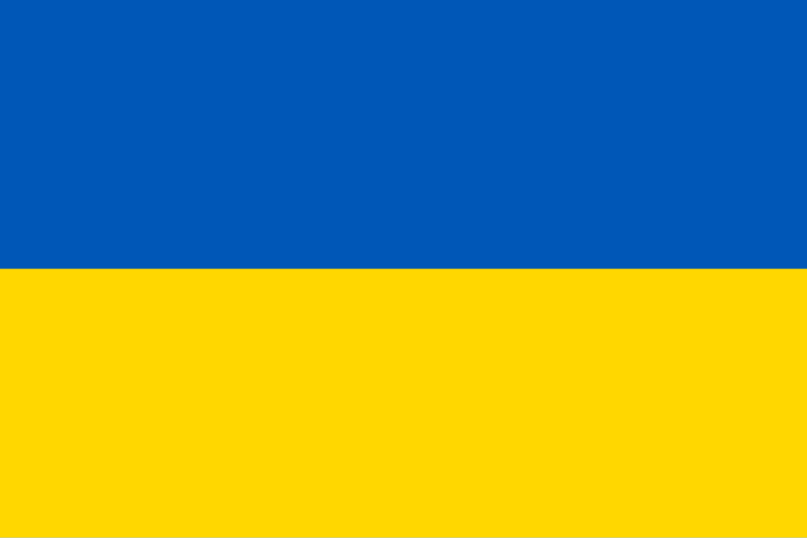

Україна
Шо це і де це?
Україна — держава у Східній та частково Центральній Європі. Охоплює південний захід Східноєвропейської рівнини, частину Східних Карпат і Кримські гори. Межує з Румунією й Молдовою на південному заході, з Угорщиною, Словаччиною та Польщею на заході, з Білоруссю на півночі та з росією на сході й північному сході. На півдні омивається Чорним та Азовським морями. Площа становить 603 700 км²[7]. Найбільша за площею країна серед повністю розташованих у Європі[8].
Сучасна держава Україна відновила незалежність внаслідок розпаду Радянського Союзу й проголошення незалежності 24 серпня 1991 року, яке закріпив референдум 1 грудня 1991 року.
Україна є унітарною державою, складається з 24 областей, Автономної Республіки Крим і двох міст зі спеціальним статусом: Києва — столиці й найбільшого міста, і Севастополя.
Географія та природа
Україна розташована в Східній Європі, на південному заході Східноєвропейської рівнини. Площа країни становить 603 700 км². Україна межує з Білоруссю на півночі, з росією на північному сході, з Польщею, Словаччиною та Угорщиною на заході, з Румунією та Молдовою на південному заході. На півдні омивається Чорним та Азовським морями. Найбільша за площею країна серед повністю розташованих у Європі.
А в цілому природа зашибісь.
Історія
Ну... Почнемо з того, що Україна була, є й буде. А теперь трошки більше букв.
Перщі згадки
Слов'янське слово «Україна» вперше згадується в Київському літописному зводі за Іпатіївським списком під 1187 роком. Ним окреслювали терени Переяславського князівства, що входило до історичного ядра Русі поруч із Київським і Чернігівським князівствами. Це слово також зустрічається в руських літописах під 1189, 1213, 1280 і 1282 роками, позначаючи Галичину, Західну Волинь, Холмщину й Підляшшя. У литовських і польських хроніках та офіційних документах XIV—XVII століття «Україною» в широкому значенні називали руські землі Галичини, Волині, Київщини, Поділля й Брацлавщини, а у вузькому — територію Середнього Подніпров'я. Таке ж двояке значення цього слова зберігалося й із середини XVII століття, після постання руської держави Війська Запорозького.
Але Україна була і до того, лише звалась інакше.
Русь
Починаючи з IX століття українські землі стали центром Руської землі на чолі з полянським Києвом. 882 року Київ захопив варязький князь Олег (882—912)
Це була найбільша держава Європи, площа якої сягала 1,5 млн км2. Кордони Київської Русі на півночі пролягали в районах Чудського озера, Фінської затоки Балтійського моря, Ладозького й Онезького озер; на заході — у районі верхів'їв Дністра, Карпат, Західного Бугу, Німану і Західної Двіни; на півдні — Сули, Дону, Росі й Південного Бугу; на сході — Волги та її притоки Оки. Також певний час мала дві зовнішні ізольовані колонії: фортецю Білу Вежу серед степів на нижньому Доні (X—XII ст.) та місто Тмуторокань на Кімерійському Боспорі (Керченська протока, X—XI ст.)
Галицько-Волинська держава
Після занепаду Русі політичний, економічний і культурний центр українських земель перемістився до Галицько-Волинської держави. До її складу входили Волинь, Галичина, Берестейщина, Холмщина, Підляшшя, Белжщина, Турово-Пінщина, Чорна Русь, західна Київщина та Закарпаття[90]. Окремі князівства в Галичині, де правили Ростиславичі, виникли починаючи з 1084 з центрами в Перемишлі, Теребовлі та Звенигороді. 1141 р. Володимирко Володарович об'єднав їх у єдине Галицьке князівство, яке досягло найбільшого розквіту за правління Ярослава Осмомисла.
Трошки про місто лева
Близько 1256 року, після перемог над монголами Куремси, Данило заснував місто Львів. 1259 року, через відсутність військової допомоги з Заходу, король повторно визнав верховенство Орди. Його наступник Лев І постійно брав участь у походах ординців на Польщу і Литву. 1303 року Данилів онук король Юрій І домігся створення Галицької митрополії. 1308 року держава перейшла до його синів Андрія і Лева II, які розпочали боротьбу проти Золотої Орди в союзі з тевтонськими лицарями і мазовецькими князями. Проте після їхньої смерті останній монарх Юрій II знову визнав себе васалом Золотої Орди. 1340 року його вбивство дало привід Польщі та Литві — сусідам, які мали династичні права на руський престол, — розпочати війну за галицько-волинську спадщину. 1392 року Галичина з Белзькою землею і Холмщиною остаточно увійшла до Польського королівства, а Волинь — до Великого князівства Литовського, яке ще раніше опанувало землі Київського та Чернігівського князівств. У той самий час південні українські землі перебували у складі Золотої Орди, а Закарпаття — у складі Угорського королівства.
Символи сучасної України
Герб 
Прапор 